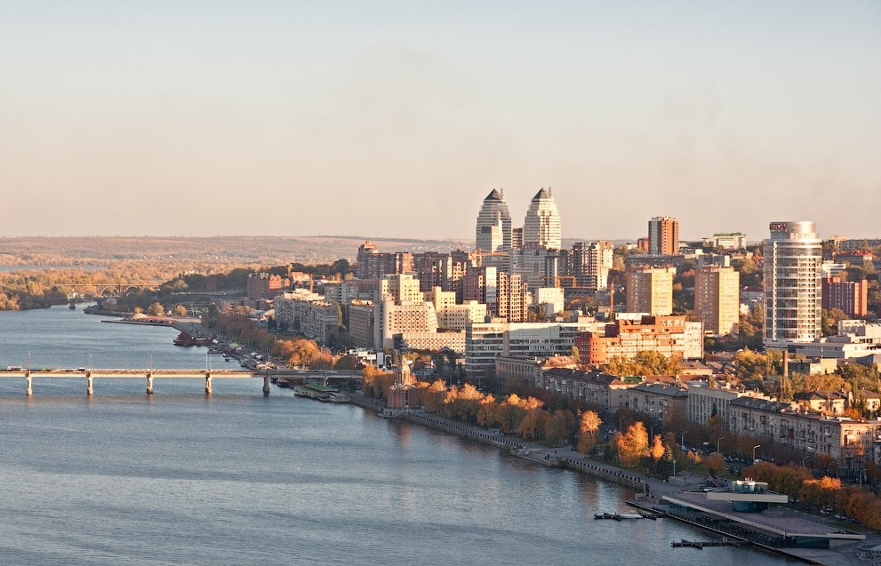

Ukraine

Ukraine, is a vast country in Eastern Europe known for its Orthodox churches, its coasts along the Black Sea and its forested mountains. Its capital, kyiv, is home to Saint Sophia Cathedral, topped with a gold dome and featuring mosaics and 11th-century frescoes. Overlooking the Dnieper, the Lavra of the Caves of kyiv is a vast monastery and place of Christian pilgrimage which contains tombs, relics and Scythian catacombs where mummified Orthodox monks rest.
Cities
Kyiv, is the capital and most populous city of Ukraine. It is in north-central Ukraine along the Dnieper River. As of 1 January 2021, its population was 2,962,180,[10] making Kyiv the seventh-most populous city in Europe. Kyiv is an important industrial, scientific, educational, and cultural center in Eastern Europe. It is home to many high-tech industries, higher education institutions, and historical landmarks. The city has an extensive system of public transport and infrastructure, including the Kyiv Metro. The city's name is said to derive from the name of Kyi, one of its four legendary founders. During its history, Kyiv, one of the oldest cities in Eastern Europe, passed through several stages of prominence and obscurity. The city probably existed as a commercial center as early as the 5th century.
Lviv, is the largest city in western Ukraine, and the seventh-largest in Ukraine, with a population of 717,510 (2021 est.). It serves as the administrative centre of Lviv Oblast and Lviv Raion, and is one of the main cultural centres of Ukraine. It was named in honour of Leo, the eldest son of Daniel, King of Ruthenia. Lviv emerged as the centre of the historical regions of Red Ruthenia and Galicia in the 14th century, superseding Halych, Chełm, Belz and Przemyśl. It was the capital of the Kingdom of Galicia–Volhynia from 1272 to 1349, when it was conquered by King Casimir III the Great of Poland. From 1434, it was the regional capital of the Ruthenian Voivodeship in the Kingdom of Poland. In 1772, after the First Partition of Poland, the city became the capital of the Habsburg Kingdom of Galicia and Lodomeria.

Dnipro, previously called Dnipropetrovsk from 1926 until May 2016, is Ukraine's fourth-largest city, with about one million inhabitants. It is located in the eastern part of Ukraine, 391 km (243 mi) southeast of the Ukrainian capital Kyiv on the Dnieper River, after which its Ukrainian language name (Dnipro) it is named. Dnipro is the administrative centre of the Dnipropetrovsk Oblast. It hosts the administration of Dnipro urban hromada. The population of Dnipro is 968,502 (2022 est.)